Next: Enlargement Up: Fluid Section Types: Open Previous: Reservoir Contents
The geometry of a contraction is shown in Figure 123 (view from above). The flow is assumed to take place from left to right. To calculate the fluid depth following a contraction based on the fluid depth before the contraction (or vice versa) the specific energy is used (cf. Section 6.9.18). At a contraction the channel floor elevation does not change, so the specific energy after the contraction minus the specific energy before the contraction amounts to the head loss. Assuming at first no head loss, the specific energies are the same.
Figure 124 shows 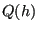
| (200) |
the curve after the contraction is just scaled in Q-direction. From the figure we notice that due to the contraction the fluid depth increases if the flow is supercritical and decreases if it is subcritical. The inverse is true for an enlargement. Writing the above expression before and after the contraction for the more general case of a trapezoidal section:
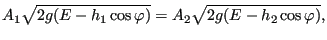 |
(201) |
one arrives at:
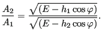 |
(202) |
This means that if 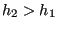 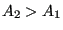 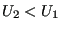
Now, if the contraction is strong it can happen that the new specific energy line does not have an intersection with the volumetric flow at stake (dashed line in Figure 125). Assume the flow before the contraction is supercritical (point 1 in the figure). Then, to solve the problem of a lacking intersection the specific energy after the contraction is increased so that the energy line barely touches the volumetric flow. This takes place for the critical depth of this energy line, since it is at this height that the flow is maximal and the flow only increases its energy as much as barely needed. So after the contraction the flow is characterized by point 2. In downstream direction it is the start of a supercritical frontwater curve within the contraction. In upstream direction it is the first point of a subcritical backwater curve, for which looking in upstream direction the contraction looks like an enlargement. Therefore, the upstream condition of the contraction is now represented by point 1* (the width has increased and the energy line is scaled by a factor exceeding one). This point will be connected to the original frontwater curve ahead of the contraction by a hydraulic jump.
Another way of looking at this is by realizing that the increased specific energy needed to accomodate the given flow within the contraction can only be obtained by decreasing the energy loss upstream of the contraction. This is done by a decrease of the friction, obtained by lifting the supercritical flow to a subcritical level. Indeed, a larger fluid depth corresponds to less friction.
The previous considerations did not take head losses into account. The head loss at the contraction can be approximated by (obtained by experimental evidence):
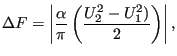 |
(203) |
where
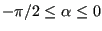 , where L is the length of the contraction). For supercritical flow
and consequently:
, where L is the length of the contraction). For supercritical flow
and consequently:
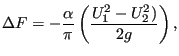 |
(204) |
leading to the following relation between the upstream and downstream specific energy:
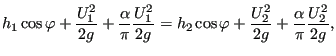 |
(205) |
or
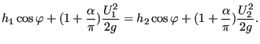 |
(206) |
This means that the head loss can be taken into account by replacing 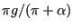 in
the specific energy by
in
the specific energy by
For subcritical flow 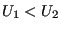 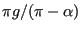 has to be replaced by
has to be replaced by
The following constants have to be specified on the line beneath the *FLUID SECTION,TYPE=CHANNEL CONTRACTION card:
Example files: channel9, channel11.